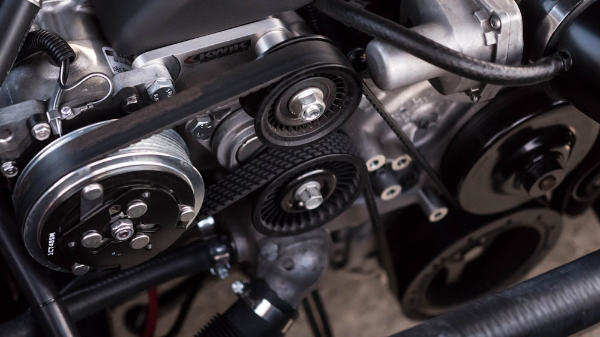
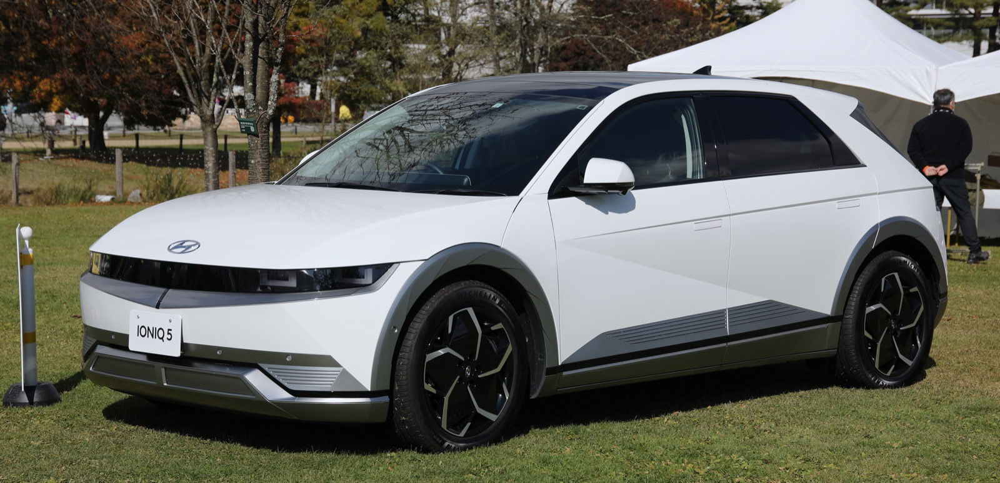
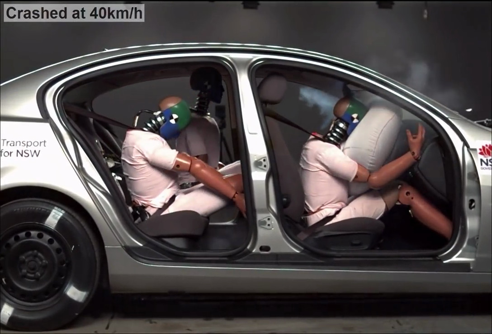
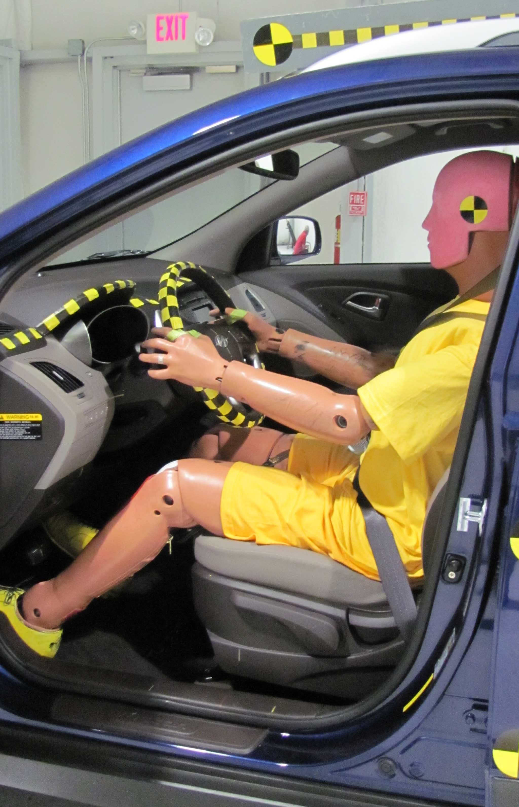
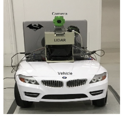
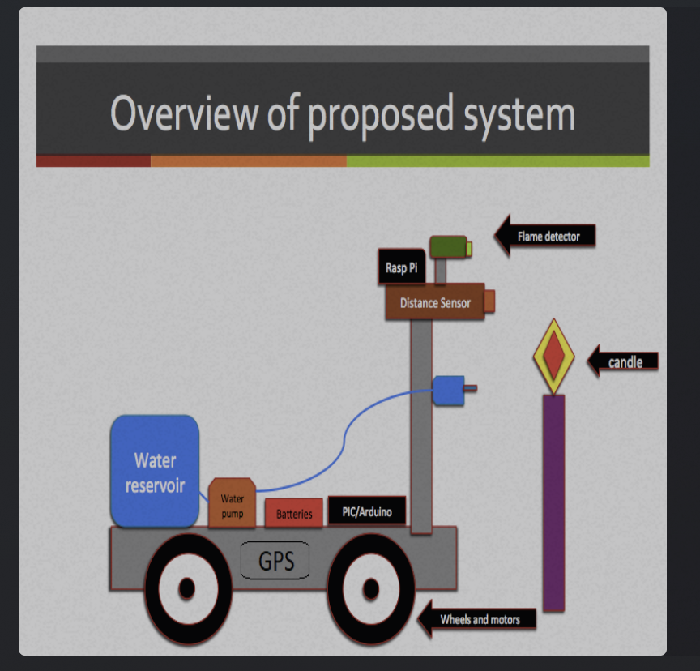

Achievement
Vision-based lane tracking & path planning for autonomous navigation
Lane detection, vehicle positioning vs. lane center, and motion planning in MATLAB/Simulink—foundational to how I still think about perception and control.
Autonomous vehicles focused since 2013
Senior Engineering Manager — Autonomous Systems · Motional
Engineering Leader with 10 years of experience in Software Development and Testing building features, teams, business functions & strategies to drive superior software quality and developer productivity through high-quality testing tools, infrastructure, frameworks, continuous testing/integration practices & support.
At Motional, I lead a cross-functional engineering team on release management and performance evaluation for autonomous driving software—safe, scalable, high-quality deployments across the stack. My path in AV started in 2013 (graduate research, two IEEE papers), through safety and sensors, and back to full autonomy.
[continue to story]Newest first—the same arc as you read down: scale → back to AV → safety foundations → research roots.
Release management and performance evaluation for autonomy software—validation frameworks, metrics strategy, and roadmap alignment across the stack.
Sensor test & verification for cameras, radar, lidar, ultrasonics, IMU—AD system envelope, requirements, and on-road proof. The deliberate return to AV.
Product development support—drawings, DV/PV, validation documentation, and cross-functional release of automotive safety components.
Crash performance analysis, regulatory alignment (FMVSS, NHTSA, NCAP), and occupant-safety validation.
Firefighting robot prototype plus lane tracking, motion planning, and SICK LiDAR obstacle avoidance—two IEEE-related papers on autonomous vehicles (see Research). Where the AV thread started.

Cars and engineering have been a through-line—design, dynamics, and systems thinking. I still bring that obsession to work: rigor, clarity, and respect for the machine—whether it is a vehicle platform or a software release.
Languages: English, Hindi, Telugu.
Graduate work—two peer-reviewed IEEE-related publications on autonomous vehicles.
Achievement
Lane detection, vehicle positioning vs. lane center, and motion planning in MATLAB/Simulink—foundational to how I still think about perception and control.
Achievement
SICK LiDAR–based avoidance, steering architecture, and sensor tradeoffs—pairing perception with safe motion under real hardware constraints.
Newest first, then back through career and graduate research.

Hyundai Ioniq 5–class EVs in Motional’s public robotaxi programs.
I lead a cross-functional team on release management and performance evaluation for Motional’s autonomous driving software—validation criteria, go/no-go evidence, and metrics across fleet and simulation.
Structured releases with clear safety and performance bars; evaluation at scale for safety, comfort, and decision quality; roadmap signals from systemic issues and deployment risk. Partners across autonomy, platform, product, and safety.
Earlier: Systems Test & Verification (roads, simulation, HIL; RCA/FTA/FMEA)—then led a software test org (~8 engineers) across programs.
Aptiv (Delphi successor)—brand logo.
Contributed to validation and testing of autonomous vehicle systems—sensors, system behavior, and on-road scenarios.
Test strategies for camera, radar, LiDAR, and IMU stacks; requirements and test cases with R&D; lab and real-world runs to find limits and edge cases.

Occupant-safety validation (airbag / crash testing).
Designed, validated, and released components and test systems for automotive safety products.
Drawings, test plans, and DV/PV execution; lab and customer validation with design, manufacturing, and quality.

Crash testing and occupant evaluation.
Safety-critical crash analysis, regulatory alignment, and validation of occupant safety systems.
Simulation and physical test data; FMVSS, NHTSA, NCAP; DV/PV, failure modes, and fixes with design, manufacturing, and quality.

Firefighting robot prototype—vehicle, LiDAR, camera, and onboard laptop (graduate lab setup).
Firefighting robot prototype (sensing, navigation, extinguish) and AV perception/control—two IEEE-related publications (Research).
Robot: embedded nav, flame detection, reservoir/pump on a mobile base. AV: lane detection, avoidance, motion planning with camera/LiDAR—simulation and hardware.

System architecture overview—sensors, processing (PIC/Arduino, Raspberry Pi), reservoir, pump, and extinguishing path.
AGV: Hough lane detection, camera/LiDAR avoidance. Firefighting robot: GPS, flame/distance sensing, dual processors, water delivery, floor-plan navigation.
Release criteria, structured validation, go/no-go framing, and de-risking deployments across the autonomy platform.
Evaluation design, fleet and simulation scale, regression tracking, and turning data into roadmap signals.
Camera, radar, lidar, ultrasonics, IMU; MATLAB/Simulink; SolidWorks, CATIA; FEA; ML and computer vision where it counts.
Global teams, roadmaps, stakeholder alignment, release practices—without losing technical depth.
Recruiters, hiring managers, collaborators: reach out by email or LinkedIn—I typically reply within a few business days.